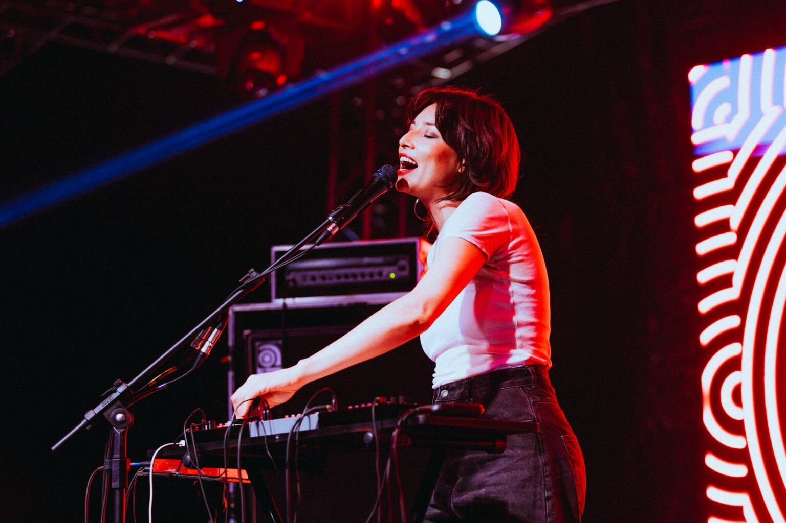
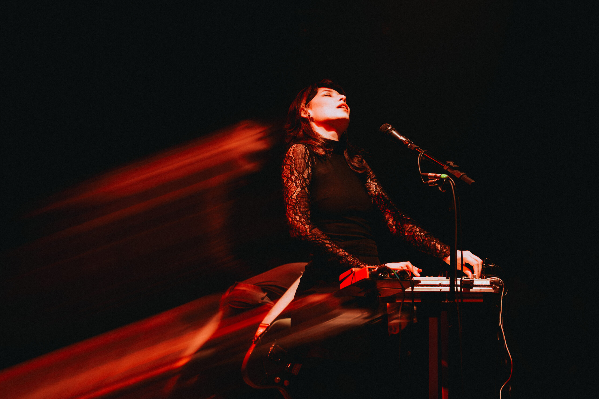
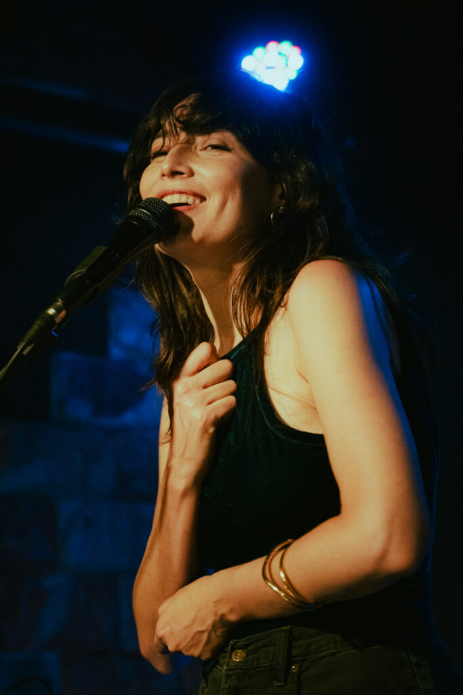
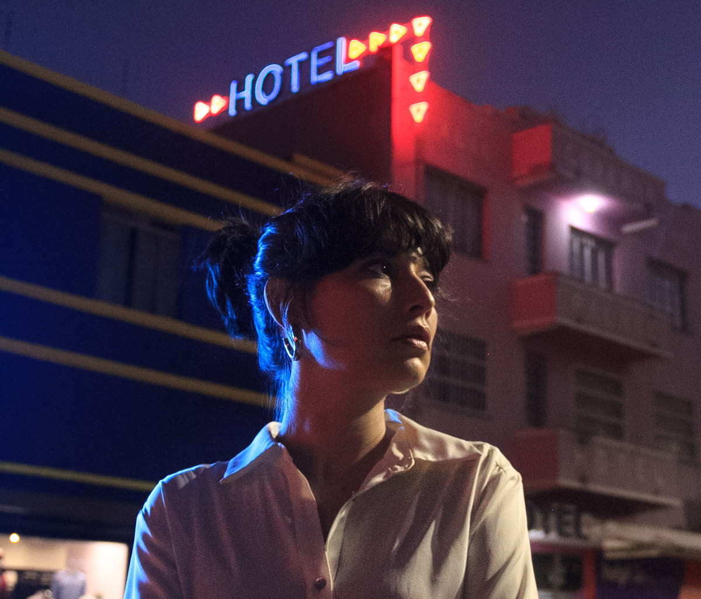

🎵 VERY SERIOUS MUSIC BUSINESS 🎵
~*~ welcome to the official unofficial business card zone ~*~
← escape to the good designsFRONT SIDE (the cool one)
🎵 🎤 🎸 🎹 🎶
Salma Jô
I MAKE AUTHORAL MUSIC!!! 😎
GOIÂNIA → THE WORLD 🌍
100%
ALTERNATIVE
MUSIC!
ALTERNATIVE
MUSIC!
BACK SIDE (business stuff)
☎️ CONTACT ME MAYBE!!!
VERY REAL PHOTOS!!! 📸 WOW!!!




Deliberately ugly. Surprisingly real contacts. Comic Sans, bargain-bin emoji, neon gradients, clashing borders and absolutely no restraint. Nothing has been changed in the serious designs.
Size proof only: 85 × 55 mm. Print at 100%, with background graphics enabled. Not production artwork. Comic Sans and emoji appearance depend on the fonts available on your device. The tiny collage uses the same web-sourced previews as the serious gallery; photo-use permission is still needed before printing.